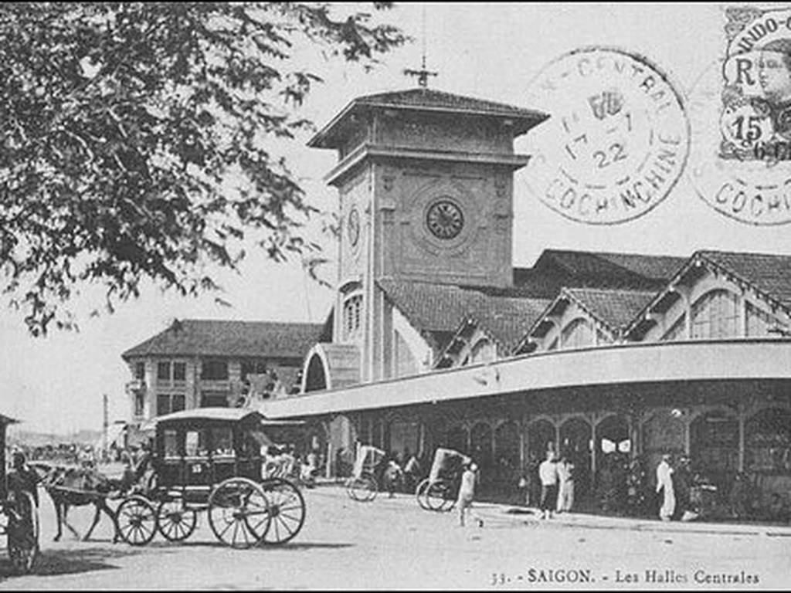

Ký ức từ quá khứ đến hiện tại

👆 Kéo thanh để so sánh Chợ Bến Thành xưa và nay
Chợ Bến Thành nằm tại khu vực trung tâm Quận 1 cũ, nay thuộc phường Bến Thành, TP.HCM. Đây là một trong những khu chợ nổi tiếng nhất thành phố, nổi bật với tháp đồng hồ ở cổng chính và hoạt động mua bán đa dạng.
Tên chợ gắn với vị trí gần bến sông Bến Nghé xưa, nơi người dân và khách vãng lai thường cập bến để vào thành Gia Định.
Chợ có nguồn gốc từ khu chợ ven sông trước thời Pháp thuộc.
Chợ cũ xuống cấp, cần xây dựng lại.
Chợ mới được xây dựng tại vị trí hiện nay và khánh thành.
Chợ trải qua nhiều lần sửa chữa, nâng cấp để đáp ứng nhu cầu buôn bán và du lịch.
Chợ là đầu mối giao thương và cung cấp hàng hóa thiết yếu cho cư dân Sài Gòn.
Chợ vừa phục vụ mua sắm, vừa là điểm tham quan, trải nghiệm ẩm thực và biểu tượng văn hóa của TP.HCM.
Chợ được xây dựng theo phong cách kiến trúc đầu thế kỷ XX, với kết cấu rộng, các cổng ra vào và tháp đồng hồ đặc trưng. Qua thời gian, công trình được sửa chữa nhưng vẫn giữ hình ảnh quen thuộc.
Xưa kia, chợ chủ yếu cung cấp thực phẩm, nông sản, hàng gia dụng. Hiện nay, bên cạnh hàng thiết yếu, chợ còn nổi bật với đồ lưu niệm, thủ công mỹ nghệ, quần áo, đặc sản và dịch vụ ăn uống phục vụ khách du lịch.
Chợ thể hiện nhịp sống thương mại sôi động, sự giao lưu giữa nhiều cộng đồng và nét văn hóa mặc cả, giao tiếp trực tiếp. Tuy nhiên, sự phát triển của trung tâm thương mại và mua sắm trực tuyến đang làm thay đổi thói quen tiêu dùng.
Chợ gắn với ký ức đi chợ cùng gia đình, tiếng rao hàng, cảnh người mua kẻ bán đông đúc và những mối quan hệ lâu năm giữa tiểu thương với khách quen.
Chợ vẫn là nơi mưu sinh của nhiều hộ kinh doanh, đồng thời đón đông đảo du khách trong và ngoài nước. Trải nghiệm ngày nay đa dạng hơn nhưng cũng mang tính du lịch rõ nét hơn trước.